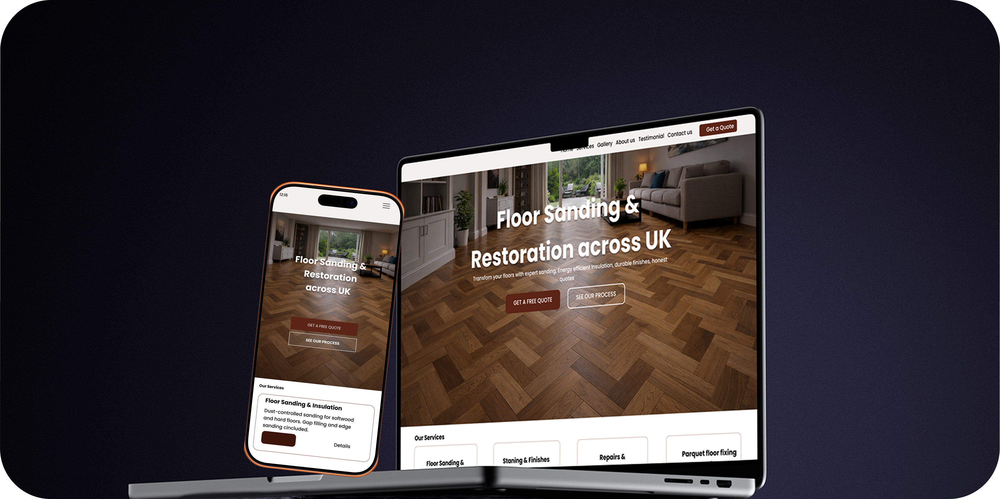
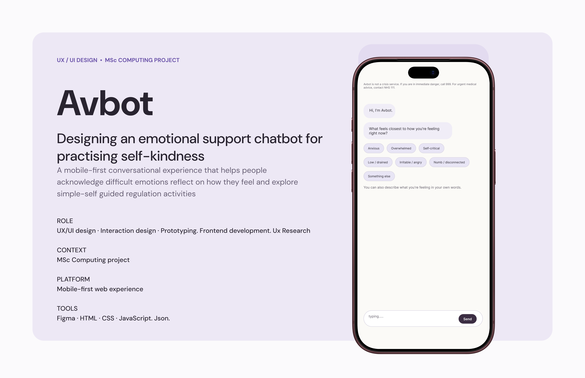
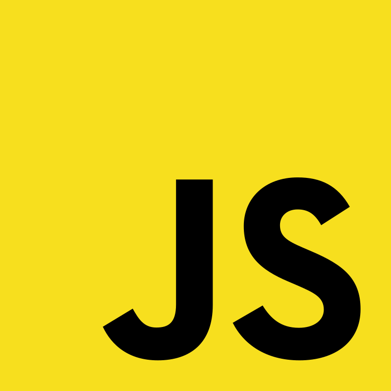
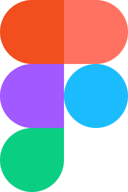
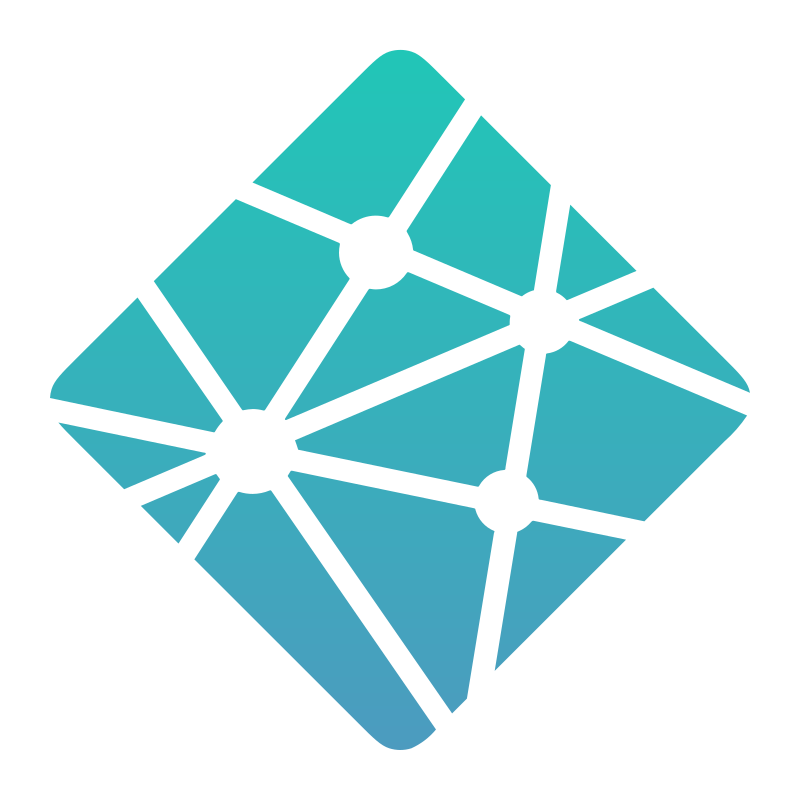
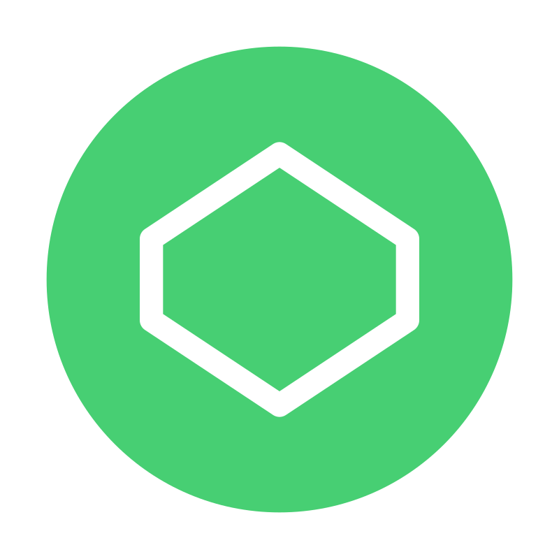

GoLDN – London Discovery App
A community-driven London discovery app designed to help people find hidden gems, share favourite places and connect through local recommendations and experiences.
View case study →UX/UI Designer
User-centred design, intuitive interfaces, and accessible digital experiences.
View selected workAbout
I’m a UX/UI Designer interested in understanding user needs and creating digital experiences that feel intuitive, accessible and easy to navigate.
I enjoy exploring problems, mapping user journeys, developing wireframes and prototypes, and refining interfaces to make digital products clearer and easier to use.
My background in frontend development gives me an understanding of how design translates into functional, responsive experiences. I enjoy bringing structure, visual clarity and attention to detail into every stage of the design process.
Through academic, personal and freelance projects, I’ve explored different stages of UX/UI design, from research and ideation to interface design and implementation. I’m always looking for ways to make digital experiences more useful and meaningful to the people who use them.
Selected Work
A selection of projects where I explored interface design, frontend development, and the process of turning ideas into working digital experiences.
A community-driven London discovery app designed to help people find hidden gems, share favourite places and connect through local recommendations and experiences.
View case study →
Conversion-focused website for a real client, designed and built end-to-end with performance and clarity in mind.
View website →
A human-centred digital product designed to promote self-kindness through calm, structured conversational flows.
View case study →Skills
 CSS
CSS

JavaScript
Figma Git / GitHub
Git / GitHub

Netlify
CodePenContact
Need a user-friendly website or want to learn more about my work?